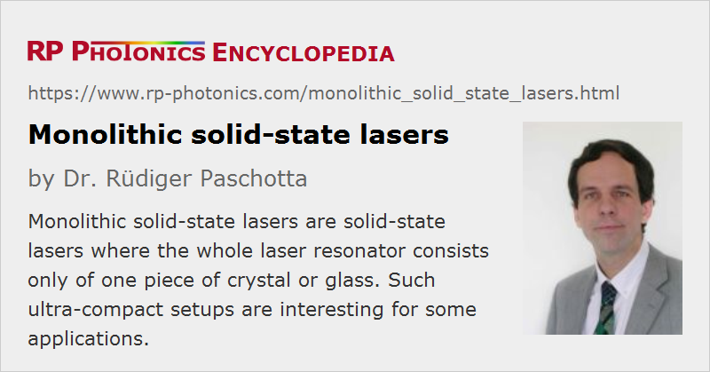

Monolithic Solid-state Lasers
Definition: solid-state lasers where the whole laser resonator consists only of one piece of crystal or glass
More general term: solid-state lasers
More specific terms: nonplanar ring oscillators, microchip lasers
German: monolitische Festkörperlaser
How to cite the article; suggest additional literature
Author: Dr. Rüdiger Paschotta
Although most solid-state lasers consist of a number of discrete elements (e.g. of a laser crystal or glass, some laser mirrors, and possibly additional intracavity optical elements), there are some types of lasers which are monolithic. For monolithic lasers according to a strict definition, the whole laser resonator consists only of some piece of crystal or glass. The resonator is then closed either with dielectric mirror coatings on the surfaces, or with total internal reflection. A somewhat relaxed definition allows for reflections from additional optical elements, and even for additional components within the laser resonator, provided that these elements are rigidly attached (e.g. bonded) to the gain medium.
There are monolithic lasers of different kinds; some typical examples are listed in the following:
- Microchip lasers have a linear resonator, with the gain medium being a thin slice of crystal or glass material. Such lasers are available as compact single-frequency lasers, also in Q-switched form or with intracavity frequency doubling (→ green lasers).
- Nonplanar ring oscillators (NPROs) are monolithic lasers where the laser radiation circulates along a nonplanar ring in a single laser crystal (e.g. of Nd:YAG). In most cases, these are single-frequency lasers, and they can deliver up to a few watts of output power.
- Waveguide lasers are also often monolithic. Such a laser can be based on, e.g., a channel waveguide in lithium niobate (LiNbO3). The nonlinearity of this material allows for further functions, such as electro-optic modulation for Q switching, mode locking, or wavelength tuning.
- Most semiconductor lasers, e.g. laser diodes, are monolithic.
A common property of monolithic lasers is that they have a very stable and compact setup. Furthermore, monolithic designs often allow for fairly low intracavity losses (possibly well below 1%), leading to a low threshold pump power and relatively small linewidth (even though carefully designed lasers with longer resonators can have a still narrower linewidth). Another consequence of the typically short resonator is a high relaxation oscillation frequency. A frequent practical limitation is that a monolithic laser setup does not allow the insertion of additional intracavity optical components. Also, it is usually not possible to modify various design parameters without fabricating a whole new laser device.
Questions and Comments from Users
Here you can submit questions and comments. As far as they get accepted by the author, they will appear above this paragraph together with the author’s answer. The author will decide on acceptance based on certain criteria. Essentially, the issue must be of sufficiently broad interest.
Please do not enter personal data here; we would otherwise delete it soon. (See also our privacy declaration.) If you wish to receive personal feedback or consultancy from the author, please contact him e.g. via e-mail.
By submitting the information, you give your consent to the potential publication of your inputs on our website according to our rules. (If you later retract your consent, we will delete those inputs.) As your inputs are first reviewed by the author, they may be published with some delay.
See also: solid-state lasers, microchip lasers, waveguide lasers
and other articles in the category lasers
|  |
If you like this page, please share the link with your friends and colleagues, e.g. via social media:
These sharing buttons are implemented in a privacy-friendly way!